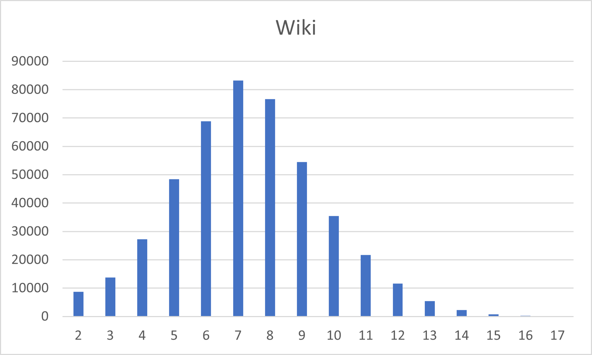
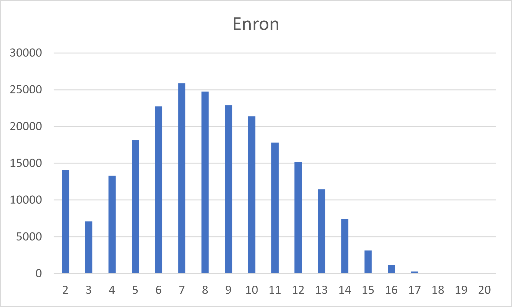

Algorithm 1: Bron-Kerbosch with Degeneracy
NOTE: Click on each image to get the number of maximal cliques of each size.

| Metric | Value |
|---|---|
| Largest Clique Size | 17 |
| Total number of maximal cliques | 459002 |
| Execution time without Parallelization | 1.810 sec |
| Execution time with Parallelization | 0.459 sec |

| Metric | Value |
|---|---|
| Largest Clique Size | 20 |
| Total number of maximal cliques | 226859 |
| Execution time without Parallelization | 50.513 sec |
| Execution time with Parallelization | 7.755 sec |

| Metric | Value |
|---|---|
| Largest Clique Size | 67 |
| Total number of maximal cliques | 37322355 |
| Execution time without Parallelization | 48368.6 s ~ 13.43 hrs |
| Execution time with Parallelization | 3351.14 s ~ 55.9 mins |
Source Code (Non-Parallelized)
#include <bits/stdc++.h>
using namespace std;
struct Graph {
int n;
vector<unordered_set<int>> adj;
Graph(int n) : n(n), adj(n) {}
void addEdge(int u, int v) {
adj[u].insert(v);
adj[v].insert(u);
}
vector<int> degeneracy() const {
vector<int> ordering;
vector<unordered_set<int>> rem = adj;
vector<bool> done(n, false);
for (int i = 0; i < n; i++) {
int min_deg = INT_MAX, min_ver = -1;
for (int v = 0; v < n; v++) {
if ((rem[v].size() < min_deg) && !done[v]) {
min_deg = rem[v].size();
min_ver = v;
}
}
ordering.push_back(min_ver);
done[min_ver] = true;
for (int near : rem[min_ver]) {
if (!done[near]) {
rem[near].erase(min_ver);
}
}
}
reverse(ordering.begin(), ordering.end());
return ordering;
}
const unordered_set<int>& get_neigh(int v) const { return adj[v]; }
int size() const { return n; }
};
struct BronKerbosch_Cliquer {
const Graph &graph;
vector<int> ordering;
int totalCliques = 0, maxCliqueSize = 0;
map<int, int> cliqueSizes;
BronKerbosch_Cliquer(const Graph &g) : graph(g) {
ordering = graph.degeneracy();
}
void BronKerboschDegeneracy(vector<int> &R, vector<int> &P, vector<int> &X) {
if (P.empty() && X.empty()) {
int curr_size = R.size();
totalCliques++;
maxCliqueSize = max(maxCliqueSize, curr_size);
cliqueSizes[curr_size]++;
return;
}
int pivot = -1, max_ele = -1;
for (int u : P) {
int c = 0;
const auto &neigh = graph.get_neigh(u);
for (int w : P)
if (neigh.find(w) != neigh.end()) c++;
if (c > max_ele) {
pivot = u;
max_ele = c;
}
}
for (int u : X) {
int c = 0;
const auto &neigh = graph.get_neigh(u);
for (int w : P)
if (neigh.find(w) != neigh.end()) c++;
if (c > max_ele) {
pivot = u;
max_ele = c;
}
}
const auto &piv_neigh = graph.get_neigh(pivot);
int i = 0;
while (i < (int)P.size()) {
int v = P[i];
if (piv_neigh.find(v) != piv_neigh.end()) {
i++;
continue;
}
const auto &v_neigh = graph.get_neigh(v);
vector<int> P_new, X_new;
for (int w : P)
if (v_neigh.find(w) != v_neigh.end()) P_new.push_back(w);
for (int w : X)
if (v_neigh.find(w) != v_neigh.end()) X_new.push_back(w);
R.push_back(v);
BronKerboschDegeneracy(R, P_new, X_new);
R.pop_back();
P[i] = P.back();
P.pop_back();
X.push_back(v);
}
}
void count_max_cliques() {
int n = graph.size();
for (int i = 0; i < n; i++) {
int v = ordering[i];
const auto &neigh = graph.get_neigh(v);
vector<int> P, X;
for (int j = i + 1; j < n; j++)
if (neigh.find(ordering[j]) != neigh.end()) P.push_back(ordering[j]);
for (int j = 0; j < i; j++)
if (neigh.find(ordering[j]) != neigh.end()) X.push_back(ordering[j]);
vector<int> R = {v};
BronKerboschDegeneracy(R, P, X);
}
}
int get_max_size() const { return maxCliqueSize; }
int get_tot_cliques() const { return totalCliques; }
const map<int, int>& get_size_dist() const { return cliqueSizes; }
};
int main(int argc, char* argv[]) {
if (argc != 2) {
cerr << "Please use './executable_name input.txt' for executing" << endl;
return 1;
}
ifstream inputFile(argv[1]);
if (!inputFile) {
cerr << "Could not open file" << endl;
return 1;
}
auto start = chrono::high_resolution_clock::now();
int n, m;
inputFile >> n >> m;
Graph graph(n);
for (int i = 0; i < m; ++i) {
int u, v;
inputFile >> u >> v;
if (u < 0 || u >= n || v < 0 || v >= n) continue;
graph.addEdge(u, v);
}
BronKerbosch_Cliquer counter(graph);
counter.count_max_cliques();
auto end = chrono::high_resolution_clock::now();
chrono::duration<double> elapsed = end - start;
cout << "1. Largest clique size: " << counter.get_max_size() << endl;
cout << "2. Total no of maximal cliques: " << counter.get_tot_cliques() << endl;
cout << "3. Execution time: " << elapsed.count() << " seconds" << endl;
cout << "4. Distribution of clique sizes:" << endl;
for (const auto& [size, count] : counter.get_size_dist())
cout << " Size " << size << ": " << count << " cliques" << endl;
return 0;
}